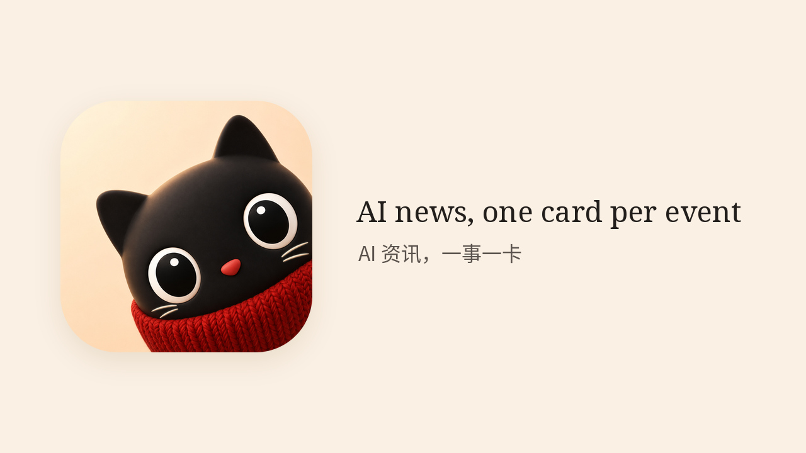
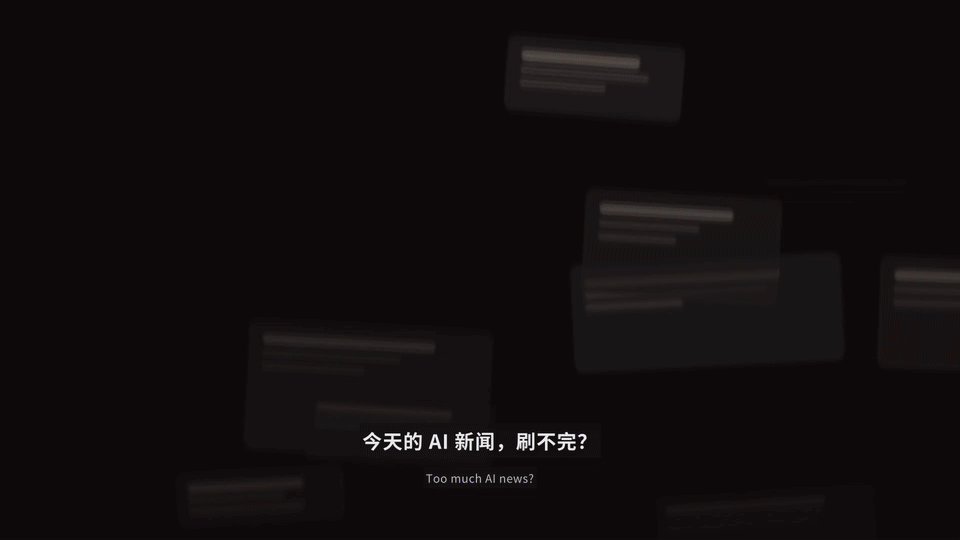
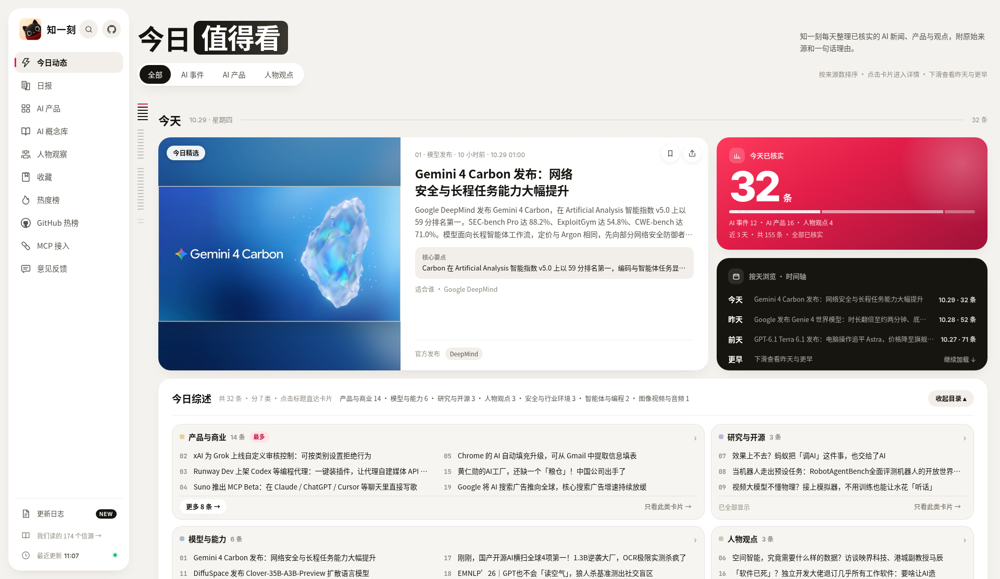
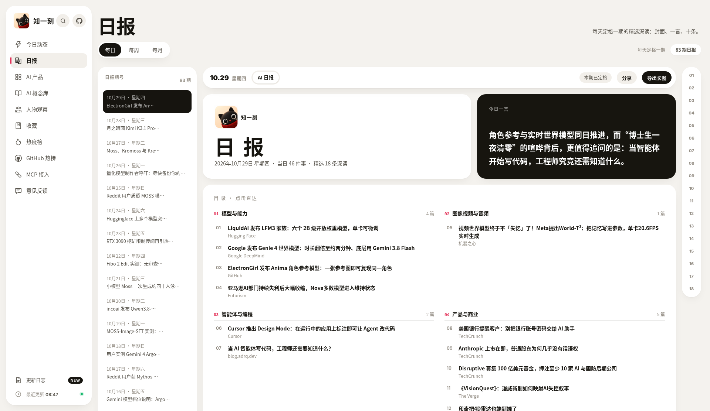

免费、只读的中文 AI 资讯：每件真实事件一张卡，保留来源。无需注册，无需 API Key。
Free, read-only Chinese AI news — one card per event, sources kept.
claude mcp add --transport http zhiyike https://zhiyike.cn/mcp
地址 https://zhiyike.cn/mcp，Streamable HTTP，只读。


